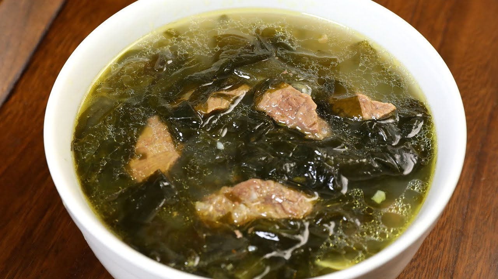

Seaweed Soup

A soup so delicious that you cannot resist!
This is a recipe that I've inherited from the love of
my life, JZ Pudding! The ingredients
are easy to come by as long as you live near an Asian
supermarket and doesn't take much time to cook! The
recipe is as follows:
Ingredients
- 4 cups of water
- 1 whole dried seaweed
- 1 cup of dried shrimp
- 1 cup of dried scallops
- 1 chopped habanero pepper
- 2 whole eggs
- 1 tsp of salt and white pepper
- 2 tsp bonito stock granules
- 1 whole chopped green onion
- Your choice of protein source (shrimp, tofu, etc.)
Steps
- Soak the dried shrimp and scallops in warm water
- Bring the water to a boil in a pot
- After the water boils, add the bonito stock
- Follow by adding in the dried seaweed, shrimp, and scallops
- If you're a fan of spice, now we add in the chopped habanero
- Bring the soup to a boil and add in your choice of protein
- Season the soup with salt and pepper
- Gradually check to see if protein is cooked
- Once the protein is cooked, beat 2 eggs and slowly drizzle it in
- Turn off the heat and add chopped green onions to a bowl
- Pour the soup over the green onions and top off with more